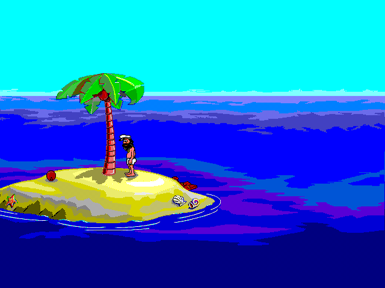
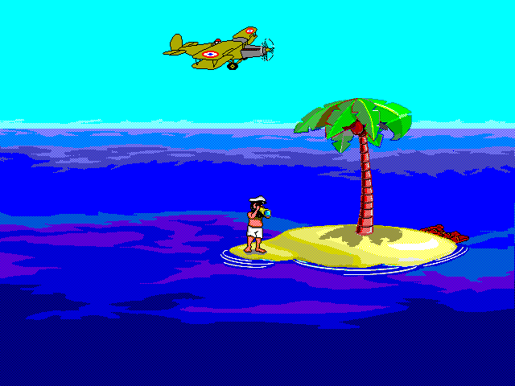

Automatic Story
A deterministic director joins the island, walks, fades, and scenes into continuous hands-off playback.
Independent, unofficial libretro port
A portable C99 core that brings Johnny's automatic story to modern RetroArch frontends, with direct scene access and the most useful additions from the PlayStation port.
Bring a legally owned copy of the original data. It is not bundled with this port or uploaded by the Web player.

Play in a browser
The Pages build serves the complete, checksum-verified v0.1.3 RetroArch Web player. The original Sierra/Dynamix files are a separate input that you choose locally.
Open the Web playerRESOURCE.MAP and RESOURCE.001 from your lawful copy.More than a straight port
The core preserves the screensaver-like flow while exposing practical choices through RetroArch's standard Core Options menu.
A deterministic director joins the island, walks, fades, and scenes into continuous hands-off playback.
Jump directly to any audited chapter. Every selection starts the real scene as a live-rendered preview.
Enable captions and tune their size, position, background style, and opacity without altering the scene.
The background soundtrack is a separately licensed CC0 ocean-ambience loop. Volume controls and optional user-supplied original SFX are supported.
Use your local date, a simulated calendar, no overlay, or force one of 36 asset-free holiday title/date presentations.
Seed, calendar, speed, tide, raft stage, mute, ambience, captions, reset, and versioned save states use standard libretro interfaces.
Authentic runtime capture
The core decodes the user's original resources and renders them through a bounded software pipeline. No SDL window, platform-specific GPU API, or copied game asset is compiled into the core.
The airplane scene at right is the fixed Visitor 1 chapter running in the exact release Web build.

Verified public release
These links point directly to the assets published from source commit
52351184596d086d0ac0670935782947bf66bd7a. Verify downloads
with the published checksum list.
Browser
Play here, or download the complete standalone static player archive.
Computers & mobile
Installable console frontends
Core link inputs
Static core libraries for the supported console toolchains; these are not installable applications by themselves.
Download console coresWhat “supported” means here
The public release is built from clean source, checked for expected formats and libretro exports, and scanned to exclude original data. Linux has real RetroArch runtime evidence; the Web release has strict authentic Firefox video, WebGL, menu, audio-unlock, and cadence evidence.
The authentic browser matrix exercises all 63 fixed scenes: 61 through the ordinary settled window and the short Stand15 and Stand16 scenes through reset-scoped early-motion windows that retain the same quality gates.
Original-data boundary
This independent project is GPLv3-or-later, but Johnny Castaway's names, characters, artwork, animation, and original sounds remain the property of their respective rights holders. The project is not affiliated with or endorsed by Sierra, Dynamix, or those rights holders.
No original resource archive, extracted sprite, proprietary holiday
image, or original sound sample is included. You must supply a legally
owned RESOURCE.MAP and RESOURCE.001.
Build and contribute
Start with the architecture and porting plan, then run the strict host suite before sending a change.